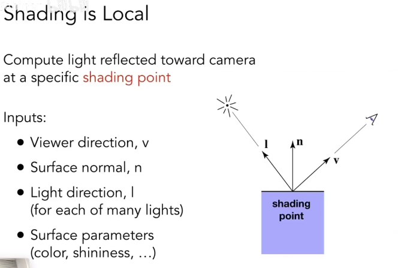
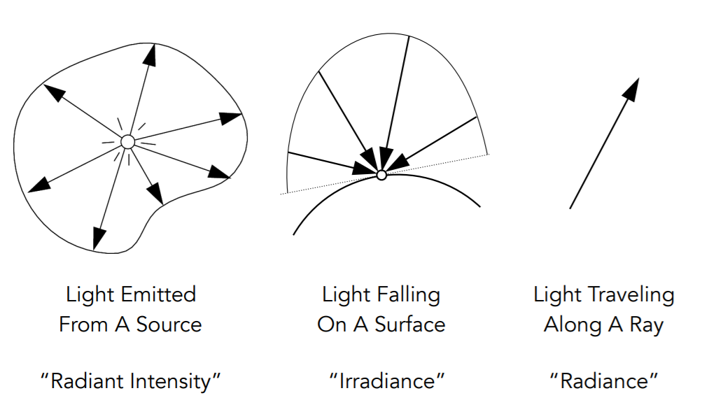
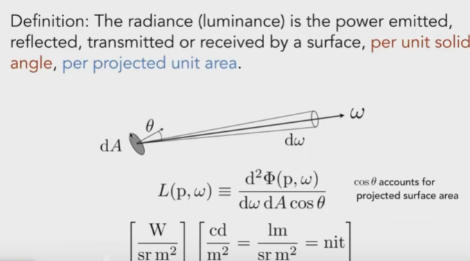
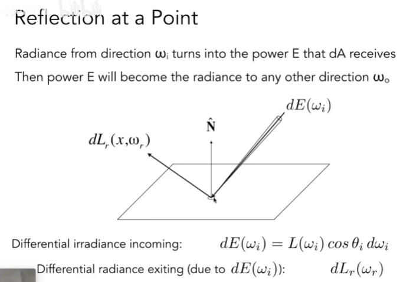
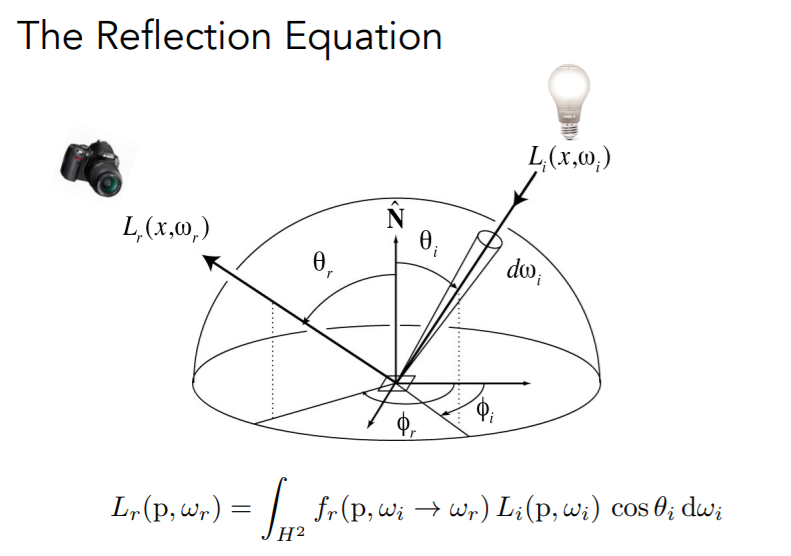
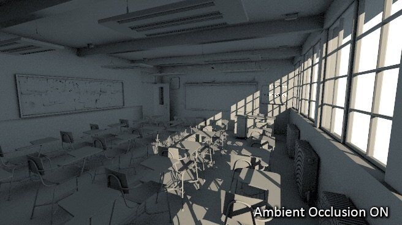

这篇 blog 对图形学中学到的相关概念进行回顾 :)
Blinn-Phong 着色模型
着色模型是计算机图形学中的一个概念
着色是具有局部性的
Blinn-Phong 着色模型是一种基于 Phong 着色模型的改进
- 漫反射分量
： ， 。 - 镜面反射分量
： ， 。 。 - 环境光分量
： ， ， 。 。

漫反射 Diffuse Reflection 对于某一个平面的漫反射项
高光项 Specular Term 基于如果视线方向 $\vec v$ 和镜面方向相近
其中

环境光照 Ambient Term 环境光照的强度不取决于物体
最终 Blinn-Phong 着色模型的实现就是上述三项相加
， ，
辐射度量学
辐射度量学提供了在物理上精准地描述光这个物理量的方法
- Radiant Flux 辐射通量
- Radiant Intensity 辐射强度
- Irradiance 辐射照度
- Radiance 辐射亮度
Radiant flux 辐射通量

Radiant intensity 辐射强度

Irradiance 辐照度

Radiance 辐射度

Irradiance 是一个表面 $dA \cos \theta$ 接收到的能量
这里 $H^2$ 表示半球面
BRDF 双向反射分布函数
BRDF

从 $\omega_i$ 方向到达物体表面的 Radiance 会被转换成能量 $E$ 进而被物体表面吸收

使用 BRDF 可以用来定义镜面反射和漫反射
渲染方程
于是

首先我们来考虑反射方程
有了反射方程之后
渲染方程是反射方程项加上物体表面相对于 $\omega_o$ 方向的自发光项
材质与外观 Materials and Appearance
在图形学中
漫反射材料 Diffuse/Lambertian Material

我们定义漫反射材料会将任何方向的入射光均匀地分散到所有的出射方向上
如果我们假设入射光也是均匀分布在各个角度上的
这里 $d \omega_i = r^2 \sin\theta \ d\phi \ d\theta$
这里 $\rho$ 就是我们说的 Albedo Color
抛光的金属 Glossy Material

理想反射/折射材质

Texture Maps

- Albedo Map
： ， 。

- Normal Map (Bump Map)
： ， 。

- Roughness Map (Gloss Map)
： 。 ， 。 - 当光线照射到表面时
， ， 。 。 - 如果表面非常光滑
， ， ， ， 。 ， ， ， ， ， 。
- 当光线照射到表面时
- Metalness Map
： 。 。 ， 。 - Metallic
（ ） （ ） ， 。 ， ： - Diffuse
（ ） （ ） ： （ ） 。 ， ， ， 。 ， ， ， 。 - Specular 的光滑度
： （ ） 。 ， ， ， 。 ， ， ， ，
- Diffuse
- Metallic
- Height / Displacement Map
： （ ） （ ） ， 。 - Height Map
（ ） ： ， 。 ， 。 。 ， ， 。 - Displacement Map
（ ） ： ， 。 ， ， 。 ， 。
- Height Map


- Ambient Occlusion
： “ ” “ ” 。 ， ， 。